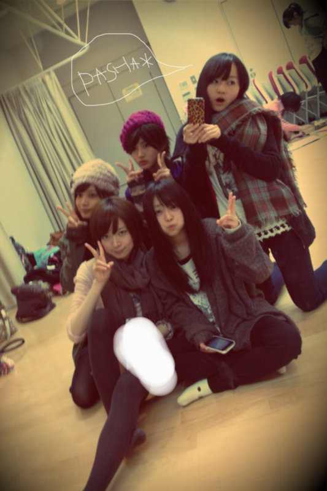

| 2011/12 09 Fri | 22回目*marika |
やぁやぁ!!
いつも読んでくださってる方、
初めて読んでくださった方、
コメントしてくださった方、
ありがとうございます♪♪♪
万理華です。←今日は漢字´ `
今日は朝からお仕事ありました。
福岡メンバー明日がんばって^^*!!!
今日めっっっっっちゃ寒いですね
マフラーぐるぐる巻きやった。笑
貧血の心配ありがとうございました。
ほうれん草も食べよう○!!
気ぃつけます‼はい
最近スムーズに更新できて
かいててもとても楽しいです。
みなさんが私のBloGで
楽しんでいただけたら幸いです。
....あっ、これこの前も似たようなの言うたな笑
(大人ぶりたい年頃なんです←)
＊＊＊
読んでいただいて
私は幸せです!!
読んでくれてありがとうっ=33
昨日部屋掃除しました。
きれいなった＊°+。*
いいね。部屋きれいやと:D!!
空気すっきり気分すっきり
えへえへ
聞いて!
今日ねねころと駅で
待ち合わせしよってことになって
駅で次の電車待ちながら
何時頃着くかメール打って送ったら
ねねが『おんなじ時間に着く(笑)』
って返ってきて....
そんで
「へぇーそうなんや、ほー」
って考えてたら、いきなり肩叩かれて
「あっ、メンバーかな？」
って思って振り返ったら
ねねころ。
........おったんかい!!!!!
終わり(笑)
.........................
今日も質問答えます***
・ディズニーキャラクターなにがすき？
ディズニーランド行くんですか♡?
いいな.....
お土産........!!!!!!!いいんですか--??!
もう、気持ちだけでじゅうぶんうれしいですよ-*
好きなキャラクターは
ミッキー、ミニー、バンビ、ダンボかな♪
・街でだいぶ声をかけられるようになった？
だいぶ...
以前に1回も声かけられたことないです笑
きっぱり!
・今年やり残したこと、
今年中にやっておきたいことはある？
別腹でなくなるようする.....!
今年中にコート買いたい!!
京都のおばあちゃん家に行きたい!
大阪の友達に会いたい!
もう着ない服とさよならする!
・雑貨マニア？
YES!!!!!!←←
レトロでカラフルなのだいすきです♡♡
・乃木坂はakbみたいに恋愛禁止条はあるの？
akbさんと一緒だと思います!*
本当に忙しくなったら
恋愛なんてできないだろうな。
＊フェレットちゃんの名前!
センスないですけど
はすちゃん
はぐちゃん
はにちゃん
なぜか思い浮かぶのが『は』からです＊笑
.........................
今日いちばんじゃれた真洋と**
今日も上に乗っかった。
したら真洋も乗っかってきた笑
Lesson終わった後
真洋とめっちゃしゃべった------------

-----ありがとう♡*
真洋だいすきや><
今日は気分的にまひろって呼ぶ笑
今度やきにく行こか^^*

最近Lesson帰りに撮ったしゃしん載せちゃうで:)
PASHA＊
さりげなく私服。
今ケーブルTVで
「パコと魔法の絵本」見てます＊*
この映画だいすき---♡
こういう世界観すき!
内容もすき!
衣装、メイク、小物、背景がツボ!!
私服ほめてくださってありがとうございます。
かき忘れたけどあの黒のムートンブーツは
1000yenです!!!!!!
やっそいやっそい*****
しゃしんはパパ撮ってくれますで!!
いつもありがとうね^^
あとね!
大阪に住んでたのは短いですけど
パパとかお兄ちゃんが
今でもおもいっきし関西弁やから
私もなまってしまうんです。
笑
私の特徴っていうことで＊笑
今週の日曜日は東京モーターショーですね*
うっきうっき
わっくわっく
みなさんに早く会いたいです♡
直接感謝の気持ちを伝えたい--------!!!!!
私の列に来るように願ってます^^*!
絶対絶対来てねっ
来れない方はクリスマスのイベントで会いましょう♡＊
風邪ひかないでね。
ChUu

LOVE
ベビたん*****bA by marika